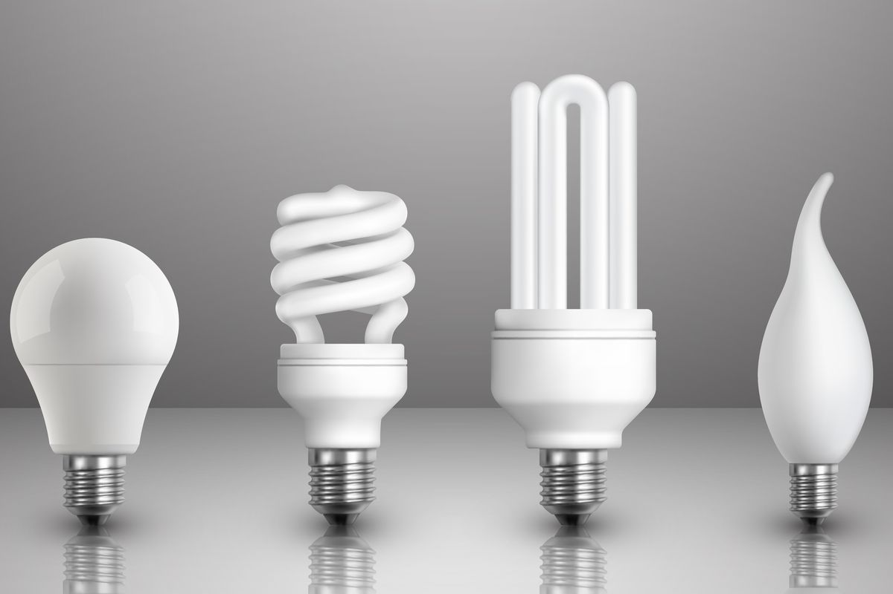

Lampu adalah reseptor yang mengubah energi. Meskipun lampu umumnya dikenal sebagai benda yang menyatu, sebenarnya lampu bisa dibagi menjadi dua bagian: di satu sisi adalah termasyhur (perangkat yang berfungsi sebagai penyangga) dan lampu yang tepat yang merupakan perangkat yang menghasilkan lampu (bohlam). Meskipun pada awalnya lampu hanya berfungsi untuk menerangi ruangan atau sektor rumah, ada berbagai jenis lampu dan klasifikasi yang bagus dapat dibuat menurut ketahanannya, harganya, daya tahannya, gayanya, dan lain-lain.
